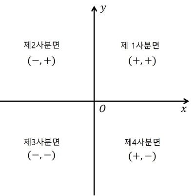

#1035
사분면 판단
문제

점 $(x, y)$가 주어진다. 이 점이 어느 사분면 위에 존재하는 점인지 판단해 보자.
입력
첫째 줄에 테스트 케이스의 개수 $T$가 주어진다. $(1 ≤ T ≤ 1,000)$
둘째 줄부터 $T$개의 줄에 걸쳐 $x, y$가 공백으로 구분되어 주어진다. $(-1,000 ≤ x, y ≤ 1,000)$
$x, y$가 $0$인 입력은 주어지지 않는다.
출력
각 테스트 케이스에 대해 그에 맞는 정답을 $T$개의 줄에 걸쳐 차례대로 출력한다.
예제
예제 입력
3 1 2 -2 -2 3 -3
예제 출력
1 3 4
💎 힌트 아이템
AlgoWiki의 인벤토리·아이템 시스템으로 잠금 해제되던 프리미엄 힌트입니다.
제 $1, 2, 3, 4$사분면에 대해 $x, y$의 부호가 각각 어떻게 돼야 하는지를 확인하자.
- $1$ 사분면 : $x(+), y(+)$
- $2$ 사분면 : $x(-), y(+)$
- $3$ 사분면 : $x(-), y(-)$
- $4$ 사분면 : $x(+), y(-)$